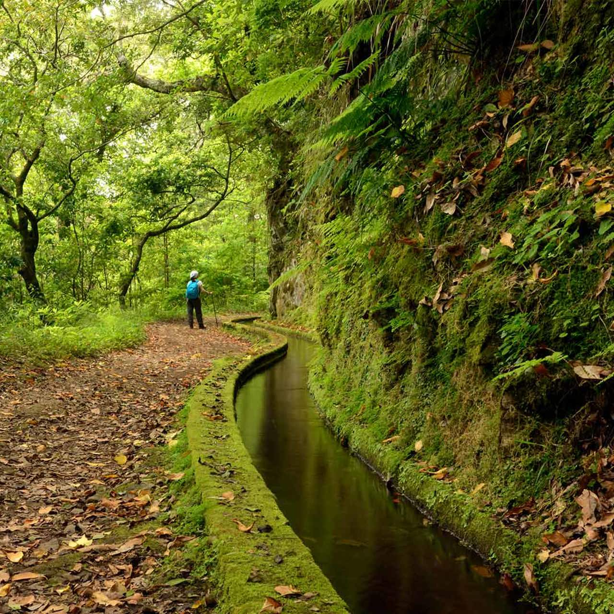
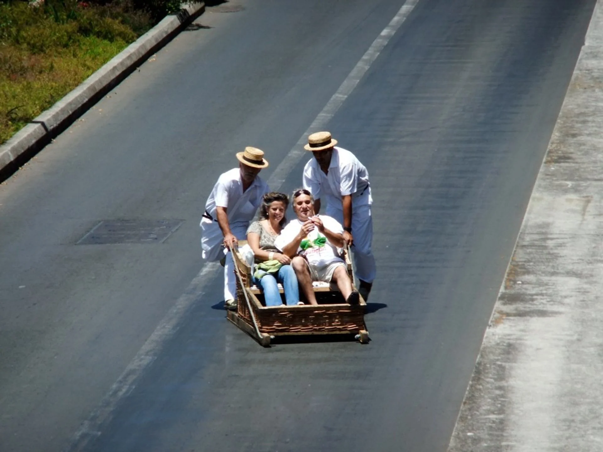
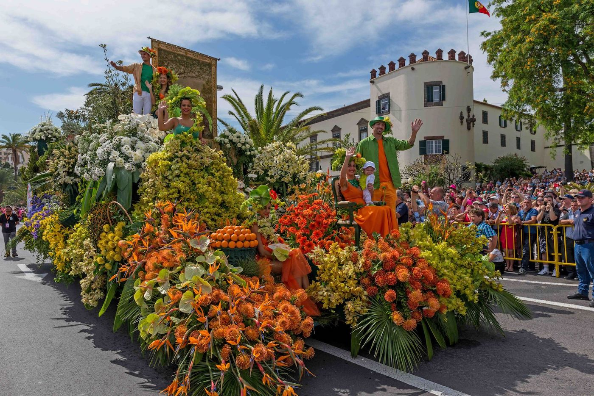

What You Didn't Know About Madeira!

Madeira isn't actually an island
Madeira is often thought of as an island although it is actually an archipelago of four islands.
Technically the region of Madeira, the archipelago, is made up of four parts: Madeira, Porto Santo and two smaller archipelagos:
the three-island Desertas and the two-island Savage Islands.

It's Home to One of the World's Oldest Laurisilva Forests
Madeira boasts a unique subtropical forest called the Laurisilva Forest, a UNESCO World Heritage site.
This ancient forest is one of the few remaining laurel forests in the world and hosts a variety of rare plants, birds, and animals found only in Madeira.

Toboggan Rides: A Unique Downhill Thrill
In the 19th century, residents of the hilltop village of Monte created a fast way to descend to Funchal—wicker toboggans on greased-up wooden runners!
Today, these wicker toboggans, steered by skilled drivers in traditional white costumes and special shoes, are a popular tourist attraction and a
fun way to experience Madeira's culture and history.

Flower Festival: Celebrating Madeira's Blossoming Beauty
Each spring, Madeira celebrates its botanical bounty with the annual Flower Festival.
This beloved tradition includes vibrant parades featuring intricately decorated floral floats,
dancers in flower-themed costumes, and an unforgettable "Wall of Hope,"
created by children placing fresh flowers to symbolize peace and renewal
More Facts About Madeira!